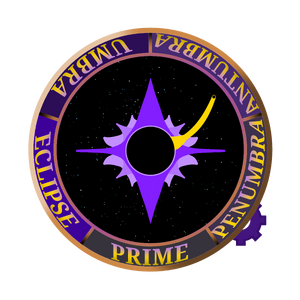

Difficulty Modifier（难度阶段）
阶段
游戏分为 5 个阶段，最终 Boss 位于最后：
- Primal
- Penumbral
- Antumbral
- Umbral
- Eclipse
- Eye of the Eclipse
阶段修正值
Ecliptica 的 Phase Modifier 是一个变量，用来决定会生成什么敌人，以及你会面对哪个 Boss。
每个商店之后会出现一个轮盘，旋转后显示你当前所处的阶段。

游戏内看到的阶段轮盘。每次商店结束后，它会旋转并显示当前阶段。范围如下表：
| 阶段范围 | 阶段 |
|---|---|
| 0 < x < 0.2 | Primal |
| 0.2 < x < 0.4 | Penumbral |
| 0.4 < x <0.6 | Antumbral |
| 0.6 < x < 0.8 | Umbral |
| 0.8 < x < 1 | Eclipse |
| 1 | Eye of the Eclipse |
游玩过程中，数值 x 会根据你完成敌人波次的速度而增加。速度较慢意味着你会在当前阶段多停留一个回合。